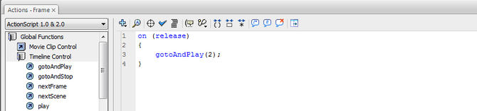

Prompt: Prof. Albert Medalla's Flash classes
Detective Dodge was a fun little flash game I made way back in college (sometime around 2012/13) for one of my favorite classes. You play a detective who's been cornered by gangsters and must expertly dodge their machinegun fire.
To give this a go, you might need to enable the flash player on your browser. Oh, and please wait for it to load. It doesn't have a preloader and I've lost the .fla source file.
You should see the game below this paragraph.
Flash has a special place in my heart because it's what got me into tech. Back in grade school I just loved making crap on it, even crap that wasn't meant for it. All my high school presentations were made in Flash. It took 10x the effort vs. making a powerpoint but didn't really deliver 10x the impact. Yeah, I was an obnoxious kid who brought in his school projects in Flash Projector files (which were .exe's).
The horror.
Back then I couldn't write even a line of code. I'm not exaggerating. I used to rely on this baby:
You'd just select a piece of code on the actions panel, double-click on it and more or less you were ready to go! Of course, you could only really program really simple behavior this way, like buttons that would play and stop the movie or the background music. Talk about coding with training wheels!
I am really thankful though, it's those training wheels that unwittingly got me started with UI design.
Nowadays, using Flash is generally considered a bad idea because it's resource intensive and insecure. A lot of platforms have stopped supporting the player altogether which means it's only a matter of time before Flash fades into obscurity. I'm thankful that some people think Flash-generated media and websites are still worth preserving.
I think they are worth preserving, not just for educational purposes but if only just for the nostalgia they brings.